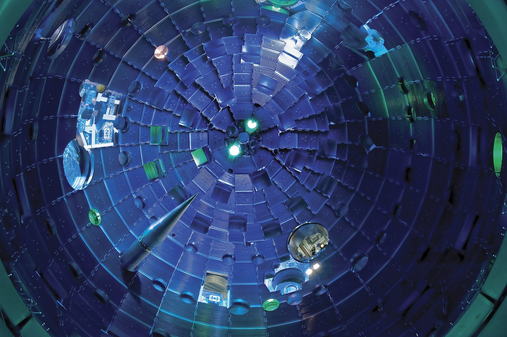

Pinches, lasers and other paths to fusion
Why have fusion researchers built so many different kinds of machines instead of agreeing on one?
Prior knowledge
- A magnetic field holds charged particles across field lines but not along them, so a straight field has open endschapter Charged particles and magnetic confinement
- Lawson's triple product: density, temperature and confinement time are all neededchapter Plasma: the fourth state of matter
Core path: follow the steps in order. Besides calculations, the core path includes investigations, explanations and graphs. Tasks marked Optional give extra practice. Optional tasks: 2.
Think about it
Since the 1950s, fusion researchers have tried long straight tubes, rings of every shape, giant lasers and machines that crush plasma with pistons. In December 2022 news around the world announced a fusion breakthrough at a laser laboratory in California. Today private companies promise fusion electricity within a few years, while the large public project ITER plans its first deuterium–tritium experiments for 2039.
With so many paths and so many promises, how can you tell which ones are closest to working?
Review: open ends
Predict
Make your predictions before investigating 2 questions
Prediction 1: a current through a plasma
Prediction 2: the 2022 breakthrough
Investigate
Investigation 1: NIF's ignition shots
Statistical data · Lawrence Livermore National Laboratory, Achieving fusion ignition (lmf.llnl.gov), read 2026-11-01. Selected shots; energies as published by LLNL (to one decimal for 2024, and the fusion energy of that shot only estimated).
| Date | Laser energy on target (MJ) | Fusion energy (MJ) |
|---|---|---|
| 5 Dec 2022 | $2.05$ | $3.15$ |
| 30 Jul 2023 | $2.05$ | $3.88$ |
| 12 Feb 2024 | $2.2$ | about $5.2$ (estimate) |
| 23 Feb 2025 | $2.05$ | $5.0$ |
| 7 Apr 2025 | $2.08$ | $8.6$ |
The target gain is the fusion energy divided by the laser energy on target: $G = E_\text{fusion} : E_\text{laser}$.
Calculate the target gain $G$ of the record shot on 7 April 2025.
Hint 1: a guiding question
Divide the fusion energy by the laser energy of the same row.
Hint 2: what is the connection
$G = 8.6\ \text{MJ} : 2.08\ \text{MJ}$
Show the solution
Given
$E_\text{fusion} = 8.6\ \text{MJ}$, $E_\text{laser} = 2.08\ \text{MJ}$ (7 April 2025)
Asked
the target gain $G$
Principle
The target gain compares the fusion energy released with the laser energy that reached the target.
Formula
$$G = \frac{E_\text{fusion}}{E_\text{laser}}$$
Unit conversions
None: both energies are in megajoules, and the units cancel.
Substitution
$$G = \frac{8.6\ \text{MJ}}{2.08\ \text{MJ}} = 4.13$$
Answer
$G \approx 4.1$
LLNL reports $4.13$; the fusion energy $8.6\ \text{MJ}$ has two significant figures, and it has an uncertainty of about $\pm 0.45\ \text{MJ}$.
Reasonableness
The table shows the fusion energy growing from $3.15$ to $8.6\ \text{MJ}$ with almost the same laser energy, so the gain grew from about $1.5$ to about $4$. The laser energy is still only a small part of the electricity the facility uses.
Investigation 2: result, plan or claim?
Scientists, governments and companies all make statements about fusion. A measured result has already happened and been reported with data. A public plan is a goal of a public project or government. A company claim is a target that a company sets for itself. Sort the statements (all checked on 1 November 2026).
Word bank
a measured result · a plan · a claim · evidence · a target · to announce · to promise · to confirm · independent · reliable
Sentence starters
- This is a result, because …
- This is only a claim, because …
- The evidence for this comes from …
- Before I believe this, I would want to know …
- I agree / I disagree, because …
Discuss: why does the difference matter?
Discuss with a partner, then write three sentences. Choose one measured result and one company claim from the sorting task. What makes the first one evidence? What would you need to see before you believed the second one?
Model answer
NIF's shot of 5 December 2022 is a measured result, because the laboratory measured the laser energy and the fusion energy, published them, and repeated ignition later. Helion's promise of electricity for Microsoft from 2028 is only a claim, because no fusion device has yet produced net electricity. Before I believed it, I would want to see measured data from the machine, reviewed by independent scientists, showing more electricity out than in.
Assess your own answer
Tick the points your own answer already contains.
Review the theory.
Theory
Pinches: squeezing plasma with its own current
The earliest fusion machines of the 1950s were pinches. In a Z-pinch a large current flows along a column of plasma. The circular magnetic field of this current pushes the current-carrying plasma inward: parallel currents attract, so all the small currents in the column pull together. The column is squeezed, or pinched, and heats up.
In a theta-pinch a coil around the tube carries a fast-rising current. Its magnetic field runs along the tube and squeezes the plasma from all sides.
Pinches compress plasma well but hold it badly. A Z-pinch column is unstable: it wriggles into kinks and pinches off into sausages. In 1958 the British machine ZETA reported neutrons, but they came from these instabilities, not from thermonuclear fusion. The theta-pinch Scylla I at Los Alamos made real thermonuclear fusion in 1958, but its plasma escaped through the open ends of the tube.
Inertial confinement: a very fast squeeze
Inertial confinement fusion uses no magnetic field at all. A tiny capsule of frozen deuterium and tritium is squeezed so fast that it fuses before it can fly apart: only its own inertia holds it together, for less than a billionth of a second.
At the National Ignition Facility (NIF) in California, 192 laser beams shine into a centimetre-sized gold cylinder, the hohlraum. Its hot walls fill it with X-rays, which boil off the outer layer of a peppercorn-sized capsule. Like a rocket, this drives the rest of the capsule inward.

On 5 December 2022 NIF's lasers delivered $2.05\ \text{MJ}$ to a target, and the target released $3.15\ \text{MJ}$ of fusion energy. For the first time, a fusion experiment released more energy than the laser energy delivered to its target: the target gain was about $1.5$. By mid-2026 NIF had reached ignition eleven times in all, with target gains up to about $4$.
What it does not mean: making the $2.05\ \text{MJ}$ laser pulse took about $300\ \text{MJ}$ of electricity, about a hundred times the fusion energy. In 2014 NIF fired about one shot every two days, and most of its shots are not ignition attempts, while a power plant would need several shots every second, each with a cheap target. It is a scientific milestone, not a power plant.
Spherical tokamaks and stronger magnets
A tokamak is a ring of plasma, and its aspect ratio is the major radius $R$ divided by the minor radius $a$. ITER has $R : a = 6.2\ \text{m} : 2.0\ \text{m} \approx 3$. A spherical tokamak has an aspect ratio below 2, which makes it look like a cored apple rather than a doughnut.
In 1991 the small START machine at Culham, England, showed that this shape can hold a high plasma pressure for a given magnetic field; its successor MAST Upgrade started in 2020. The weak point is the narrow central column, with little room for coils and for shielding against neutrons. The UK's STEP programme plans a prototype spherical tokamak power plant by 2040.
High-temperature superconductors (HTS) stay superconducting at about $20\ \text{K}$ in very strong fields; ITER's magnets use older superconductors at about $4\ \text{K}$. On 5 September 2021, a large HTS magnet built by MIT and the company Commonwealth Fusion Systems reached $20\ \text{T}$. A stronger field can hold the plasma in a much smaller machine.
Private concepts: read the claims carefully
Many private companies now work on fusion. Some examples, with what they claim:
- Commonwealth Fusion Systems (USA) is building SPARC, a compact HTS tokamak, and plans its first plasma around 2027, hoping for a gain above one.
- Helion (USA) compresses rings of plasma in short pulses. In 2023 it agreed to sell electricity to Microsoft from 2028.
- General Fusion (Canada) wants to compress plasma inside a liquid-metal wall driven by pistons; in 2025 it cut a quarter of its staff because of a funding gap.
These dates are the companies' own targets, and many earlier targets in fusion have slipped. As of November 2026, no fusion device, public or private, has produced net electricity.
Key idea
Every path to fusion trades one difficulty for another. Pinches compress plasma easily but are unstable. Lasers reach ignition but need far more efficient drivers and many cheap targets every second. Compact tokamaks with strong magnets save size but face heat, neutrons and stresses in a smaller space. That is why many concepts are still tried.
Words of the lesson
Back to your predictions
Compare your two predictions with the theory. Then answer the opening question in one or two sentences: why have researchers built so many different kinds of fusion machines?
Would you change your prediction?
Examples
Once you have studied the chapter's theory, move on to the guided examples. In the first you follow a worked solution step by step; in the next ones you make the choices yourself, and the hints help if you get stuck.
Example 1
Use the NIF shot of 5 December 2022: laser energy on target $2.05\ \text{MJ}$, fusion energy $3.15\ \text{MJ}$, and about $300\ \text{MJ}$ of electricity drawn to fire the lasers. Calculate the target gain $G$ and the ratio of the fusion energy to the electricity drawn.
Step 1/7
Given: $E_\text{laser} = 2.05\ \text{MJ}$, $E_\text{fusion} = 3.15\ \text{MJ}$, $E_\text{el} \approx 300\ \text{MJ}$. Asked: the target gain $G$ and the ratio $E_\text{fusion} : E_\text{el}$.
Step 2/7
Principle: A gain compares the energy out with an energy in. The target gain uses the laser energy that reaches the target; the whole facility's balance uses the electricity that the lasers take from the grid.
Step 3/7
Formula: $$\begin{aligned} G &= \frac{E_\text{fusion}}{E_\text{laser}} \\[6pt] \text{ratio} &= \frac{E_\text{fusion}}{E_\text{el}} \end{aligned}$$
Step 4/7
Unit conversions: None: all energies are in megajoules, and the units cancel in each ratio.
Step 5/7
Substitution: $$\begin{aligned} G &= \frac{3.15\ \text{MJ}}{2.05\ \text{MJ}} = 1.54 \\[6pt] \text{ratio} &= \frac{3.15\ \text{MJ}}{300\ \text{MJ}} = 0.0105 \end{aligned}$$
Step 6/7
Answer: The target gain was $G \approx 1.5$, but the fusion energy was only about $1\ \%$ of the electricity drawn. The gain has two significant figures; the electricity is known only roughly ("about $300\ \text{MJ}$"), so the second result is given as about one per cent.
Step 7/7
Reasonableness: $G > 1$ agrees with the claim that the target gave out more than it received. A ratio far below one agrees with the lasers' low efficiency: only about $2.05\ \text{MJ} : 300\ \text{MJ} \approx 0.7\ \%$ of the electricity reaches the target as laser light.
Example 2: Apply: what gain would be needed?
Suppose that for the record shot of 7 April 2025 the lasers again drew about $300\ \text{MJ}$ of electricity to deliver $2.08\ \text{MJ}$ to the target.
What target gain $G$ would a shot need so that its fusion energy at least equals the electricity drawn?
Hint 1: a guiding question
The fusion energy must be $300\ \text{MJ}$. What is $G$ then?
Hint 2: what is the connection
$G = E_\text{fusion} : E_\text{laser}$ with $E_\text{fusion} = 300\ \text{MJ}$ and $E_\text{laser} = 2.08\ \text{MJ}$.
Show the solution
Given
$E_\text{el} \approx 300\ \text{MJ}$, $E_\text{laser} = 2.08\ \text{MJ}$; the fusion energy must equal the electricity, $E_\text{fusion} = E_\text{el}$
Asked
the target gain $G$ needed
Principle
The target gain is $E_\text{fusion} : E_\text{laser}$. Setting $E_\text{fusion}$ equal to the electricity gives the gain at which the shot would just pay back the electricity, before any losses in making electricity.
Formula
$$G = \frac{E_\text{fusion}}{E_\text{laser}} = \frac{E_\text{el}}{E_\text{laser}}$$
Unit conversions
None: both energies are in megajoules.
Substitution
$$G = \frac{300\ \text{MJ}}{2.08\ \text{MJ}} = 144$$
Answer
A target gain of about $140$ would be needed, about $35$ times the record $4.13$. The electricity is known only as "about $300\ \text{MJ}$", so two significant figures are enough.
Reasonableness
Lasers that turn under $1\ \%$ of their electricity into light on target need a gain of over a hundred just to break even. A power plant needs even more, because turning fusion heat into electricity loses more than half of it. This is why laser-fusion plants would need much more efficient lasers and targets with very high gain.
Optional Compare: each path and its main problem
Optional Example 3: Find the error
Common misconception
"Ignition at NIF means that laser fusion power is ready." In LLNL's working definition, ignition means more fusion energy than the laser energy delivered to the target, $G > 1$; physically, it means that the fusion alpha particles heat the fuel faster than it loses heat. A power plant must also cover the electricity of the whole plant, turn heat into electricity (losing more than half), fire many times a second and breed its own tritium. The same caution holds for a magnetic machine's gain $Q$: plasma gain is not electricity.
Test and assess
First try what you can do without help: each task gives you feedback and a suggestion of what to review. Then assess the chapter's goals. This is not an exam.
1. Concept task: Two pinches
2. Concept task: Inertial confinement
3. Concept task: Evaluate a statement
Sentence starters
- I would fund … because …
- One advantage of … is that …
- A limitation of this technology is …
- On the other hand, …
- The evidence so far shows …, but … is only a claim.
4. Explanation task: Argue: which path would you fund?
You advise a research council with money for one fusion concept from this unit (a pinch, laser inertial fusion, a spherical tokamak or a compact HTS tokamak). Write four or five sentences: name your choice, give one advantage and one limitation, and separate what has been shown from what is only planned or claimed.
Model answer
I would fund the compact HTS tokamak. One advantage is that high-temperature superconducting magnets reach very strong fields, and a $20\ \text{T}$ magnet was really tested in 2021, so the plasma can be held in a much smaller and perhaps cheaper machine. A limitation of this technology is that the heat and neutrons are concentrated on a smaller wall area, and nobody has yet shown that the materials survive. The magnet result is evidence, but the company's first plasma around 2027 and its gain of about 11 are only plans. So I would fund it with clear checkpoints based on measured results.
Assess your own answer
Tick the points your own answer already contains.
Review the theory.
Summary
- Z-pinch: current along the plasma, circular field, inward squeeze; theta-pinch: current around the tube, field along it. Both compress plasma but suffer from instabilities or end losses; ZETA's 1958 neutrons were not thermonuclear.
- Inertial confinement squeezes a tiny capsule so fast that inertia holds it. NIF reached a target gain above one on 5 December 2022 ($3.15\ \text{MJ}$ from $2.05\ \text{MJ}$) and $4.13$ in April 2025, but the facility draws far more electricity than the fusion energy.
- Spherical tokamaks have a low aspect ratio and hold high pressure for a given field, but their central column is crowded. HTS magnets give stronger fields and smaller machines.
- Private concepts carry claims and plans, not results; as of November 2026 no fusion device has produced net electricity.
Le coin français
Ignition at NIF made headlines in France too: l'allumage is ignition, and the target is la cible. France has its own large laser facility for this kind of research, le Laser Mégajoule, near Bordeaux. Listen, repeat, and then say the last sentence to your partner. In the hints, capitals show the stressed syllable, and õ, ã and ẽ are nasal vowels: the air goes through the nose and no n is heard.
Photographs and videos
- NIF target chamber. Lawrence Livermore National Security. source, CC BY-SA 3.0